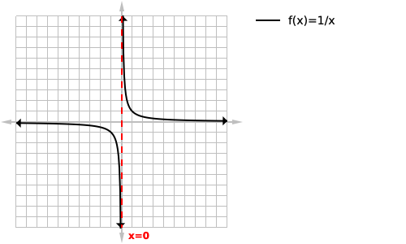

By: Mohammad-Ali Bandzar | May 2 2020
Vertical asymptotes (often abbreviated to V.A) are vertical lines that a function will approach (from one or both sides) and become infinitesimally close to, but will never touch. A more formal definition will be included below. For a function to have a vertical asymptote the range must be infinitely large, that is, it must extend to negative and/or positive infinity.
Three general types of asymptotes exist, vertical asymptotes, horizontal asymptotes, and oblique asymptotes (also commonly called slant asymptotes). In this tutorial we will be focusing on vertical asymptote. There are a couple of different ways of visualizing the vertical asymptote, the most common analogy is to visualize it as an airplane approaching a brick wall and how the pilot will pull up/down to avoid a collision. Alternatively you can just memorize the graph of 1/x and remember that all vertical asymptotes will look roughly the same (the function will either go up or down forever near the asymptote). Vertical asymptotes exist at the x-value where the denominator of the function is zero and the numerator is non-zero.

Figure 1: Graph of 1/x Visually we can see that the graph approaches but never reaches x=0 as shown with the dashed line:

We then want to label our asymptote at the bottom of the page next to the asymptote with its equation.

Below is a table of our function f(x) approaching our vertical asymptote but never reaching it from the left side, the same would apply to the right as well.
| f(x) | result |
|---|---|
| f(-1) | 1 |
| f(-0.1) | -10 |
| f(-0.01) | -100 |
| f(-0.001) | -1000 |
| f(-0.0001) | -10000 |
| f(-0.00001) | -100000 |
| f(-0.000001) | -1000000 |
| f(-0.0000001) | -10000000 |
If you are ever unsure if there is a vertical asymptote at a specific x-value, I would highly recommend making a table like the one above, to verify that the function does in fact approach negative or positive infinity as we approach said value.
A vertical line x=a (where a is any real number) will be a vertical asymptote of f(x) if any of the following limits are true:
From the left our function approaches infinity: loading...
From the left our function approaches negative infinity: loading...

From the right our function approaches infinity: loading...
from the right our function approaches negative infinity: loading...
Remember that only one (or more) of the above conditions need to be true for it to be a vertical asymptote.
This is a first year calculus definition which I will not go into depth about here but the formal proof of a vertical asymptote would be as follows:
loading...
or for vertical asymptotes that are approaching negative infinity:
loading...
If you do not understand the above that is completely ok, it is basically saying that if I give you any arbitrarily large y value (in this case N) that you can find a segment of the domain so close to our vertical asymptote such that all elements within that interval of the domain would be greater than N.
- Remember that the function can never cross/touch a vertical asymptote
- Make yourself comfortable graphing
- If you have difficulty graphing you can always fall back to plotting points and by using the table function on your calculator to generate points quickly.
- Make yourself comfortable solving quadratic and cubic equations
- Don't forget to verify that the zero in the denominator is in fact an asymptote
- Don't forget that some functions like loading... have an infinite number of vertical asymptotes (it is a periodic function)
- Use a graphing calculator/desmos.com to verify your solutions
- Remember that vertical asymptote location won't usually be a part of your domain
THANKS FOR READING